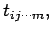
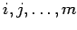
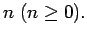
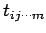

Inhalt Index DeskTop Bronstein

 Lineare Algebra Tensoren Tensoren in kartesischen Koordinaten
Lineare Algebra Tensoren Tensoren in kartesischen Koordinaten


Eine mathematische oder physikalische Größe T läßt sich in einem kartesischen Koordinatensystem K durch 3n Elemente  die translationsinvariant sind, beschreiben. Dabei sei die Anzahl der Indizes  genau  Die Indizes sind geordnet, und jeder Index nimmt die Werte 1, 2 und 3 an.
Gilt für die Elemente  bei einer Transformation des Koordinatensystems K nach  gemäß (4.65)
gemäß (4.65)
dann wird T als Tensor n-ter Stufe bezeichnet, und die Elemente (meist Zahlen) mit geordneten Indizes sind die Komponenten des Tensors T.